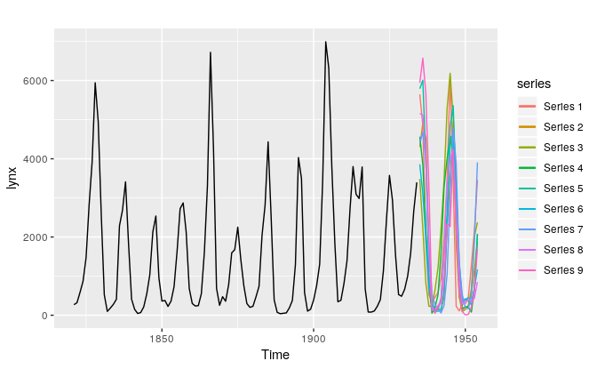

11.4 Neural network models
Artificial neural networks are forecasting methods that are based on simple mathematical models of the brain. They allow complex nonlinear relationships between the response variable and its predictors.
Neural network architecture
A neural network can be thought of as a network of “neurons” organised in layers. The predictors (or inputs) form the bottom layer, and the forecasts (or outputs) form the top layer. There may be intermediate layers containing “hidden neurons”.
The very simplest networks contain no hidden layers and are equivalent to linear regression. Figure ?? shows the neural network version of a linear regression with four predictors. The coefficients attached to these predictors are called “weights”. The forecasts are obtained by a linear combination of the inputs. The weights are selected in the neural network framework using a “learning algorithm” that minimises a “cost function” such as MSE. Of course, in this simple example, we can use linear regression which is a much more efficient method for training the model.
[shorten \>=1pt,-\>,draw=black!50, node distance=] =[<-,shorten \<=1pt]
=[circle,fill=black!25,minimum size=17pt,inner sep=0pt] =[neuron,
fill=green!50]; =[neuron, fill=red!50]; =[neuron, fill=blue!50]; = [text
width=4em, text centered]
/ in <span>1,...,4</span> (I-) at (0,-) ;
\(O) ;
in <span>1,...,4</span> (I-) edge (O);
(input) <span>Input layer</span>; ;
\@ref(fig-10-nnet)Once we add an intermediate layer with hidden neurons, the neural network becomes non-linear. A simple example is shown in Figure ??.
[shorten \>=1pt,-\>,draw=black!50, node distance=] =[<-,shorten \<=1pt]
=[circle,fill=black!25,minimum size=17pt,inner sep=0pt] =[neuron,
fill=green!50]; =[neuron, fill=red!50]; =[neuron, fill=blue!50]; = [text
width=4em, text centered]
/ in <span>1,...,4</span> (I-) at (0,-) ;
/ in <span>1,...,3</span> node[hidden neuron] (H-) at (,-cm) ;
\(O) ;
in <span>1,...,4</span> in <span>1,...,3</span> (I-) edge (H-);
in <span>1,...,3</span> (H-) edge (O);
(hl) <span>Hidden layer</span>; ; ;
\@ref(fig-10-nnet1)This is known as a multilayer feed-forward network where each layer of nodes receives inputs from the previous layers. The outputs of nodes in one layer are inputs to the next layer. The inputs to each node are combined using a weighted linear combination. The result is then modified by a nonlinear function before being output. For example, the inputs into hidden neuron \(j\) in Figure ?? are linearly combined to give \[ z_j = b_j + \sum_{i=1}^4 w_{i,j} x_i. \] In the hidden layer, this is then modified using a nonlinear function such as a sigmoid, \[ s(z) = \frac{1}{1+e^{-z}}, \] to give the input for the next layer. This tends to reduce the effect of extreme input values, thus making the network somewhat robust to outliers.
The parameters \(b_1,b_2,b_3\) and \(w_{1,1},\dots,w_{4,3}\) are “learned” from the data. The values of the weights are often restricted to prevent them becoming too large. The parameter that restricts the weights is known as the “decay parameter” and is often set to be equal to 0.1.
The weights take random values to begin with, which are then updated using the observed data. Consequently, there is an element of randomness in the predictions produced by a neural network. Therefore, the network is usually trained several times using different random starting points, and the results are averaged.
The number of hidden layers, and the number of nodes in each hidden layer, must be specified in advance. We will consider how these can be chosen using cross-validation later in this chapter.
The avNNet function from the caret package fits a feed-forward neural network with one hidden layer. The network specified here contains three nodes (size=3) in the hidden layer. The decay parameter has been set to 0.1. The argument repeats=25 indicates that 25 networks were trained and their predictions are to be averaged. The argument linout=TRUE indicates that the output is obtained using a linear function. In this book, we will always specify linout=TRUE.
Neural network autoregression
With time series data, lagged values of the time series can be used as inputs to a neural network. Just as we used lagged values in a linear autoregression model (Chapter 8), we can use lagged values in a neural network autoregression.
In this book, we only consider feed-forward networks with one hidden layer, and use the notation NNAR(\(p,k\)) to indicate there are \(p\) lagged inputs and \(k\) nodes in the hidden layer. For example, a NNAR(9,5) model is a neural network with the last nine observations \((y_{t-1},y_{t-2},\dots,y_{t-9}\)) used as inputs to forecast the output \(y_t\), and with five neurons in the hidden layer. A NNAR(\(p,0\)) model is equivalent to an ARIMA(\(p,0,0\)) model but without the restrictions on the parameters to ensure stationarity.
With seasonal data, it is useful to also add the last observed values from the same season as inputs. For example, an NNAR(3,1,2)\(_{12}\) model has inputs \(y_{t-1}\), \(y_{t-2}\), \(y_{t-3}\) and \(y_{t-12}\), and two neurons in the hidden layer. More generally, an NNAR(\(p,P,k\))\(_m\) model has inputs \((y_{t-1},y_{t-2},\dots,y_{t-p},y_{t-m},y_{t-2m},y_{t-Pm})\) and \(k\) neurons in the hidden layer. A NNAR(\(p,P,0\))\(_m\) model is equivalent to an ARIMA(\(p,0,0\))(\(P\),0,0)\(_m\) model but without the restrictions on the parameters to ensure stationarity.
The nnetar() function fits an NNAR(\(p,P,k\))\(_m\) model. If the values of \(p\) and \(P\) are not specified, they are automatically selected. For non-seasonal time series, the default is the optimal number of lags (according to the AIC) for a linear AR(\(p\)) model. For seasonal time series, the default values are \(P=1\) and \(p\) is chosen from the optimal linear model fitted to the seasonally adjusted data. If \(k\) is not specified, it is set to \(k=(p+P+1)/2\) (rounded to the nearest integer).
The surface of the sun contains magnetic regions that appear as dark spots. These affect the propagation of radio waves and so telecommunication companies like to predict sunspot activity in order to plan for any future difficulties. Sunspots follow a cycle of length between 9 and 14 years. In Figure 11.3, forecasts from an NNAR(9,5) are shown for the next 20 years.
fit <- nnetar(sunspotarea)
autoplot(forecast(fit,h=20))Figure 11.3: Forecasts from a neural network with nine lagged inputs and one hidden layer containing five neurons.
The forecasts actually go slightly negative, which is of course impossible. If we wanted to restrict the forecasts to remain positive, we could use a log transformation (specified by the Box-Cox parameter \(\lambda=0\)):
fit <- nnetar(sunspotarea, lambda=0)
autoplot(forecast(fit,h=20))Prediction intervals
Unlike most of the methods considered in this book, neural networks are not based on a well-defined stochastic model, and so it is not straightforward to derive prediction intervals for the resultant forecasts. However, we can still do it using simulation where future sample paths are generated using bootstrapped residuals.
Suppose we fit a NNETAR model to the famous Canadian lynx data:
(fit <- nnetar(lynx, lambda=0.5))
#> Series: lynx
#> Model: NNAR(8,4)
#> Call: nnetar(y = lynx, lambda = 0.5)
#>
#> Average of 20 networks, each of which is
#> a 8-4-1 network with 41 weights
#> options were - linear output units
#>
#> sigma^2 estimated as 96.3We have used a Box-Cox transformation with \(\lambda=0.5\) to ensure the residuals will be roughly homoscedastic (i.e., have constant variance).
The model can be written as \[ y_t = f(\boldsymbol{y}_{t-1}) + \varepsilon_t \] where \(\boldsymbol{y}_{t-1} = (y_{t-1},y_{t-2},\dots,y_{t-8})'\) is a vector containing lagged values of the series, and \(f\) is a neural network with 4 hidden nodes in a single layer.
The error series \(\{\varepsilon_t\}\) is assumed to be homoscedastic (and possibly also normally distributed).
We can simulate future sample paths of this model iteratively, by randomly generating a value for \(\varepsilon_t\), either from a normal distribution, or by resampling from the historical values. So if \(\varepsilon^*_{T+1}\) is a random draw from the distribution of errors at time \(T+1\), then \[ y^*_{T+1} = f(\boldsymbol{y}_{T}) + \varepsilon^*_{T+1} \] is one possible draw from the forecast distribution for \(y_{T+1}\). Setting \(\boldsymbol{y}_{T+1}^* = (y^*_{T+1}, y_{T}, \dots, y_{T-6})'\), we can then repeat the process to get \[ y^*_{T+2} = f(\boldsymbol{y}^*_{T+1}) + \varepsilon^*_{T+2}. \] In this way, we can iteratively simulate a future sample path. By repeatedly simulating sample paths, we build up knowledge of the distribution for all future values based on the fitted neural network. Here is a simulation of 9 possible future sample paths for the lynx data. Each sample path covers the next 20 years after the observed data.
sim <- ts(matrix(0, nrow=20, ncol=9), start=end(lynx)[1]+1)
for(i in seq(9))
sim[,i] <- simulate(fit, nsim=20)
autoplot(lynx) + forecast::autolayer(sim)
If we do this a few hundred or thousand times, we can get a very good picture of the forecast distributions. This is how the forecast.nnetar function produces prediction intervals:
fcast <- forecast(fit, PI=TRUE, h=20)
autoplot(fcast)Because it is a little slow, PI=FALSE is the default, so prediction intervals are not computed unless requested. The npaths argument in forecast.nnetar controls how many simulations are done (default 1000). By default, the errors are drawn from a normal distribution. The bootstrap argument allows the errors to be “bootstrapped” (i.e., randomly drawn from the historical errors).